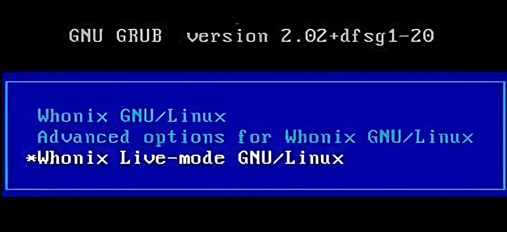
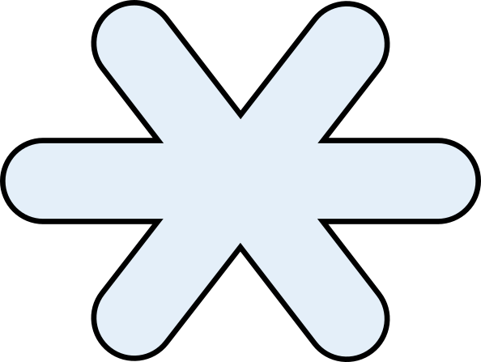

We believe security software like Whonix needs to remain Open Source and independent. Would you help sustain and grow the project? Learn more about our 14 year success story and maybe DONATE!
Chaining
Anonymizing
GatewaysDocumentationNetwork
Time
SynchronizationPrevious
page: Chaining Anonymizing GatewaysIndex
page: DocumentationNext page: Network Time
Synchronization
Live Mode for Whonix

Boot menu with boot option Live Mode selected.
Whonix Live Mode is available for Whonix if the host operating system (OS) supports it. This means that nothing is saved and Whonix forgets everything you've done after your session. This feature has been long requested and is very suitable for use cases involving sensitive data.
Alternatively, Whonix has a Live Mode boot option.
Introduction and Definitions
To use Whonix without leaving any traces the feature live mode was introduced. In live mode the system can be used as normal but all data is lost and gone after the session. In sensitive temporary data use cases this is very beneficial.
Whonix live mode is available for Whonix as guest OS and/or if the host OS supports it. A host operating system (OS) runs directly on your physical hardware. A guest OS runs inside a virtual machine.
Terminology on this page:
- A) if live mode is available on the host OS we will use HOST,
- B) if Whonix is a guest OS we will use VM GUEST.
Starting Live Mode
1. Platform specific notice.
- Non-Qubes-Whonix: No special notice.
- Qubes-Whonix: Unavailable. [1]
2. Boot your Whonix VM (VM GUEST'') or power on the computer (HOST'')
Restart / reboot if your system is already running.
3. Look closely at the Boot Menu
The grub boot menu (read more about grub bootloader here) will show your 3 options, the asterisk symbol

indicates the selected option. Read all options and analyse their meaning on a basic level. The "normal" mode is called persistent mode.The three options are:
Note: Boot option names have been renamed since version
17.3.9.2.
-
Whonix Advanced options for Whonix GNU/LinuxWhonix Live-mode GNU/Linux
What is the current selection? The current boot option selected is indicated by the asterisk symbol and also by the white text color.
Can multiple options be chosen at once? No, at a time you can only select on option. The unselected boot options have NO asterisk at the front and a light blue text color.
4. To choose Live Mode use the arrow keys.
LIVE mode USER (For daily activities.) - to switch to this option use the arrow keys (up ↑ and down ↓) on the keyboard.
5. Press ENTER.
Simply press enter after you've selected live mode.
6. Done.
Now the system is booting into live mode.
First Boot
Applicability: These instructions are only necessary for users intending to use live mode. Users who always (or mostly) use persistent mode (the default boot option) can disregard these instructions.
For the very first time Whonix-Gateway™ is started, please start it in persistent mode (the option is simply named "Whonix"), NOT in live mode. This will allow Tor to make use of Tor Entry Guards for automatic initial setup.
From the second time Whonix-Gateway is started onwards, it is the user may opt-in to run it in live mode if non-persistence, amnesia is desired.
This should eliminate any Tor-related cached data like DNS requests that could leave traces about web activity. However, be warned that it may make your Tor behavior distinguishable from that of regular Tor users, which could weaken your anonymity somewhat. This applies to:
- Consensus files: These files will be downloaded or re-downloaded more frequently.
- Tor guards: When switching to a new guard after several months have passed. [2]
Upstream

Kicksecure Hardened
Redirection to Kicksecure Documentation
- Introduction: Whonix Documentation Introduction, User Expectations, Footnotes and References, User Expectations - What Documentation Is and What It Is Not
- Whonix is based on Kicksecure™: Whonix is built on top of Kicksecure. This means it uses many of the same security tools, design concepts, and configurations.
- Kicksecure is based on Debian: Kicksecure is developed using Debian as its base. Debian is a widely used, stable, and free Linux operating system.
- Inheritance: As a result, Whonix is also based on Debian.
- Debian is GNU/Linux-based: Debian is built using the GNU/Linux operating system. GNU provides essential tools and Linux is the system's kernel (core).
- Shared documentation benefits: Since each system is based on the one below it, a lot of documentation and guides are shared. This reduces the need to duplicate information.
- Inherited documentation: Most instructions and explanations are inherited from Kicksecure or Debian, unless otherwise specified.
- Shared principles: The systems share similar security goals and setup instructions. In most cases, users can follow Kicksecure documentation when using Whonix.
- Keep using Whonix: This does not mean users should switch to Kicksecure. This page only points to related, helpful information.
- Where to apply the instructions: Follow the instructions inside Whonix unless specifically stated otherwise.
- Wiki editors notice: This information is pulled from a reusable wiki template: upstream_wiki. (See which pages use this.)
- Comparison: Whonix versus Kicksecure
- Documentation compatibility: Because Whonix is based on Kicksecure, you can often follow Kicksecure's instructions as long as you apply them in the right place.
- Summary: Whonix is built on top of Kicksecure, which itself is based on Debian. Debian is a GNU/Linux operating system. This layered design means Whonix inherits many features, tools, and documentation from both Kicksecure and Debian.
- Click here: Visit the related page in the Kicksecure wiki for full documentation and background:
 Live Mode
Live Mode
- Note: Re-interpretation...
Apply the instructions inside Whonix, not inside Kicksecure.
Kicksecure: Perform these steps inside Kicksecure.
Instead, apply the steps inside Whonix-Workstation.
Kicksecure for Qubes: Perform these steps inside Qubes
kicksecure-18Template.
Instead, use the whonix-workstation-18 Template for
these steps.
Footnotes
- ↑ Qubes issue: implement live boot by porting grub-live to Qubes - amnesia / non-persistent boot / anti-forensics
- ↑ https://forums.whonix.org/t/whonix-live-mode-amnesia-amnesic-non-persistent-anti-forensics/3894/127
Categories: Documentation